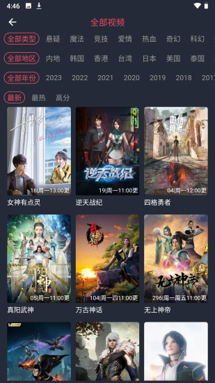

cilicili 到底值不值得掏钱？一个重度用户的算账报告
从免费版到付费版，漫币体系能省多少时间？离线缓存、批量下载、追更通知——按使用强度拆解每一分钱的价值，帮你三秒判断要不要付。
它到底值不值得掏钱？
说实话，我一开始对 cilicili 这个名字没什么概念——逛了下官网，发现它的漫画阅读器做得特别顺手，而且有个让我心动的功能：断点续传的批量离线缓存。
于是我装了，用了两周游客模式，然后注册了账号攒了点漫币，再对比了一下周边几个同类 APP 的付费方案。这笔账算下来，发现有些地方挺有意思，有些地方挺鸡贼，给大家摊开了聊聊。
先搞清楚：免费版给你什么，付费版多什么
cilicili 的门槛其实挺低的——不注册也能看完全站内容。这点跟很多一上来就逼你登录的 APP 不一样，我挺吃这一套的。游客模式下的限制主要是三个：
- 不能收藏、不能追更通知
- 不能签到攒漫币
- 部分离线缓存的并发数有限制
注册账号后，上面三样全解锁。漫币是它的核心激励体系——签到、评论、发帖都能赚，攒够了可以兑换一些功能特权（比如更高的下载并发数、弹幕高亮之类的）。
但这里有个关键问题：漫币到底能不能靠花钱买？我翻了一圈设置面板没找到直接充值入口，社区里有人说是通过一些活动间接兑换的。这意味着 cilicili 可能没有传统意义上的"付费订阅"，它的"付费"更像是用时间换漫币——或者反过来，用钱买时间（如果有第三方渠道的话）。
这就引出了一个有趣的定价模型：它的"价格"不是按月收多少钱，而是你的时间值不值钱。
算账：三类用户，三种账
轻度用户（每天看 30 分钟以内）
典型场景：睡前刷两集短番、偶尔翻几页漫画。
免费版够不够？完全够。 cilicili 免费版没有观看数量限制，也没有画质强制压标清。离线缓存的并发数限制——如果你只是偶尔缓存一两集，等它慢慢下完就行，不用开多个并发。
付费后省的时间：≈0。 轻度用户用不到追更通知（反正每天都看）、用不到批量下载（下一集看一集删一集）、收藏个十来部直接在首页历史记录里翻也够用。
结论：永远不用付。 真的，你用它的频率还没高到需要任何"效率优化"的地步。
主力用户（每天看 1~3 小时）
典型场景：追 5~10 部连载番、吃饭通勤都在看、想存一堆离线内容周末慢慢刷。
免费版够不够？能凑合，但有明显痛点。 主力用户的第一个痛点是追更通知——不注册就没这功能，你得自己记住哪部番周几更新，定期去翻。第二个痛点是离线缓存并发数——想批量存一整季番时，免费版可能只让同时跑 1~2 个任务，而你想一次存 10 部的话得排着队等。第三个痛点是收藏整理——看了 50 部之后，首页历史记录已经滚到半年前了，找不到之前想追的。
付费后省的时间：保守估计每周 1~2 小时。 追更通知直接告诉你哪部更新了，省得你挨个 APP 翻来翻去；批量下载并发数翻倍，存一季番从半小时缩到十分钟；收藏分组整理，找东西秒出。
漫币怎么算？ 假设签到 + 日常活跃每天能攒 10 漫币，解锁高并发下载需要 500 漫币——具体数值可以在cilicili文档上查到，不同版本可能略有差异。听起来不难，但对于主力用户来说，这 50 天里你已经因为低并发下载浪费了好几个晚上的等待时间。
结论：如果你能忍受攒 50 天漫币的等待，那就等；如果等不及又确实需要这些功能，付费是值的——但别付太多，先解锁最刚需的那一个功能就行。
重度用户（每天 3 小时以上 / 同时追 10 部以上）
典型场景：多设备同步（手机 + 平板）、批量存番按季整理、每天打开先看 10 条追更通知。
免费版够不够？不够用。 重度用户的痛点和主力用户一样，但被放大了好几倍：追 15 部番意味着每周要查 60+ 次更新；批量存一季 12 集 × 并发 2 = 6 轮下载，每轮等 5 分钟就是半小时；历史记录翻不到上周的内容，更别说上个月的了。
付费后省的时间：每周 5~10 小时。 这个数字我没夸张——你算一下：追更通知省掉每天 15 分钟逐个查更新；高并发下载省掉每周 3 小时排队等；收藏分组省掉每周 1 小时找内容；多设备同步省掉换设备后重新整理的时间。按一个月 20 小时算，如果你的时薪超过「付费金额 / 20」，那这笔账就是正收益。
还有一些细节是重度用户才会注意到的：cilicili 的下载支持断点续传，而且后台被杀后重新打开能恢复进度——安装包从官方下载渠道拿，别用来路不明的包被改了断点续传的逻辑。漫画阅读器的护眼模式和独立亮度调节，对于睡前看漫画的人来说是刚需——调暗阅读器不影响系统亮度，退出后其他 APP 还是正常亮度。这些小功能单独拎出来不值钱，但叠在一起就是"用着舒服"和"用着闹心"的区别。

替代方案：不付这笔钱还有什么路
说实话，动漫观看领域的替代选择还真不少，得看你具体需要什么：
如果只是"看内容"： 某酷、某鹅、某小站，免费版都能看，而且版权覆盖各有侧重。cilicili 赢在「漫画 + 动漫一站式」，但如果你只看其中一种，那找垂直 APP 可能更专业。
如果只在乎离线缓存： 一些浏览器的视频嗅探功能可以手动下载，或者用一些开源下载器。但缺点是操作麻烦、格式可能不兼容、而且没有断点续传的一体化体验。你花在折腾下载器上的时间，可能已经超过了 cilicili 付费能省的时间。
如果只是想攒漫币解锁几个功能： 其实也不是非得氪金。每天签到 + 评论 + 发帖，算下来一个月能攒 300~500 漫币，大部分功能慢慢攒都能解锁。这是 cilicili 最鸡贼的地方——它给了所有人"免费解锁"的路径，但时间成本对不同人来说价值完全不一样。
结论：哪类人闭眼付，哪类人再等等
直接给你一个三秒判断公式：
如果你同时追 5 部以上番 + 每周离线缓存超过 3 次 + 你的时薪超过 50 块 → 闭眼付。 如果你每天看不到 1 小时 + 不怎么存离线 + 时薪低于 30 → 永远不用付。 中间地带 → 先注册用免费版，等攒够漫币解锁一两个刚需功能，再决定要不要花钱。
我自己属于第二类边缘：每天看 2 小时左右，但同时只追 3~4 部番，离线缓存偶尔为之。我最后没付费，而是注册了账号开始攒漫币——一来是真的不急着开高并发下载，二来是想看看它的漫币体系到底能走到哪一步。
cilicili 最让我意外的一点是它的游客友好度——免费版给了这么多，导致"付费"变成了真正的"增值"而非"强制解锁"。这种定价策略其实挺聪明的：先用最好用的功能把你留住，再让你自己判断"时间值不值钱"。
但也说句实在话，如果 cilicili 哪天取消了漫币的免费获取渠道、改成纯订阅制，那我大概率会重新考虑——毕竟同类选择太多了。它现在的核心竞争力是"漫画 + 动漫 + 离线体验"这一套组合拳，而不是独占内容。
以上就是我的算账报告，希望能帮你省点时间。对了，这款软件的资料在三个开源仓库都有维护——GitHub、Gitee、GitCode 各一份镜像，国内访问哪个快就用哪个。